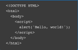

Test programs have always existed in
software development, but the tradition
of using "Hello, World!" as a test
message was influenced by an example
program in the 1978 book The C
Programming Language. The example
was taken from a 1974 Bell
Laboratories internal memorandum by
Brian Kernighan, one of the co-creators
of the Unix operating system.
Here is a JavaScript example:
